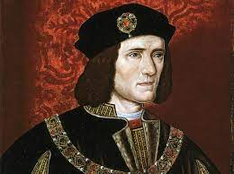

King Henry VII
Reign: 1485 - 1509
Key Facts.
- Birth: 28th Jan 1457, Pembroke Castle.
- Father: Edmond Tudor, 1st Earl of Richmond
- Mother: Margaret Beaufort
- Accession: 22nd Aug 1485
- Coronation: 30th Oct 1485
- Queen: Elizabeth of York (m.18th Jan 1486; d.1503)
- Succeeded by: His son Henry VIII
- Greatest Achievement: Establishing the House of Tudor